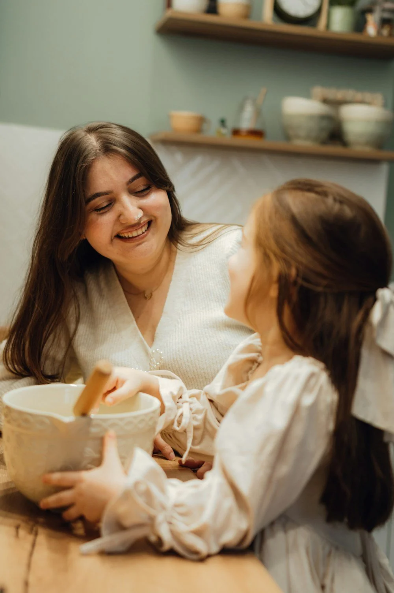

Психологическая помощь
Бережные консультации для взрослых, детей и подростков.
Узнать большеБесплатная социальная и психологическая помощь семьям и детям. Бережно, конфиденциально и без осуждения.

Подберём подходящий формат помощи и будем рядом столько, сколько потребуется.
Бережные консультации для взрослых, детей и подростков.
Узнать большеПомощь родителям и семьям в трудных жизненных ситуациях.
Узнать большеПрактическая помощь с документами, льготами и службами.
Узнать большеНе даём общих советов. Сначала внимательно слушаем, затем вместе находим решение, которое подходит именно вам.
Соблюдаем конфиденциальность и бережно относимся к вашей истории.
В команде психологи, педагоги и специалисты по социальной работе.
Объясняем каждый шаг и не оставляем вас один на один с вопросами.
Основные услуги центра предоставляются бесплатно.
Заполните короткую форму или позвоните нам.
Мы уточним ситуацию и подберём специалиста.
В удобное время — очно в центре или онлайн.
Если не нашли нужную информацию, позвоните нам — мы всё объясним.